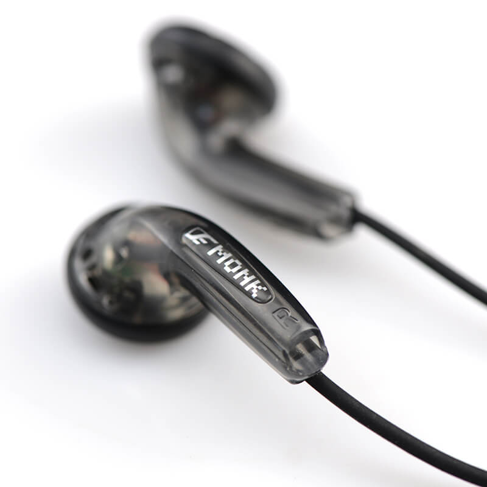
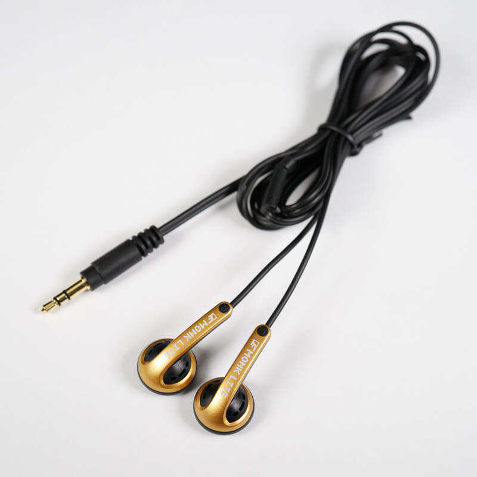
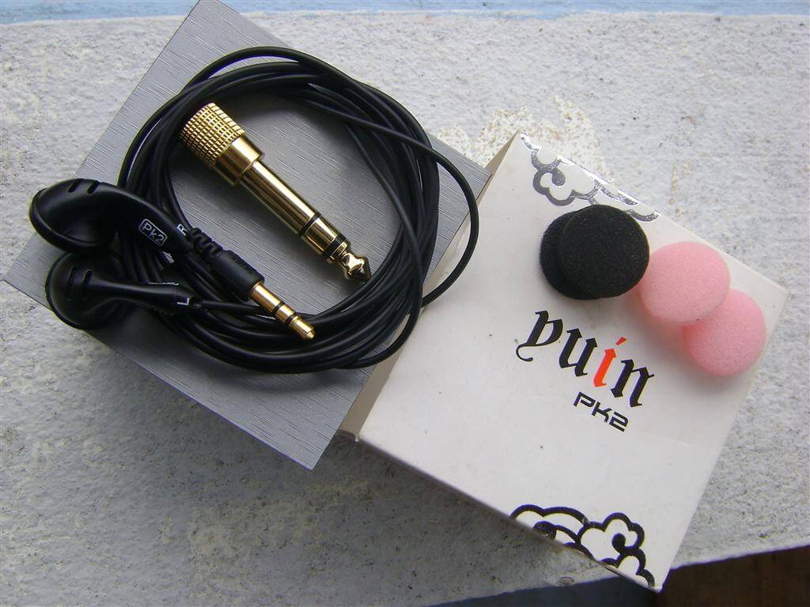
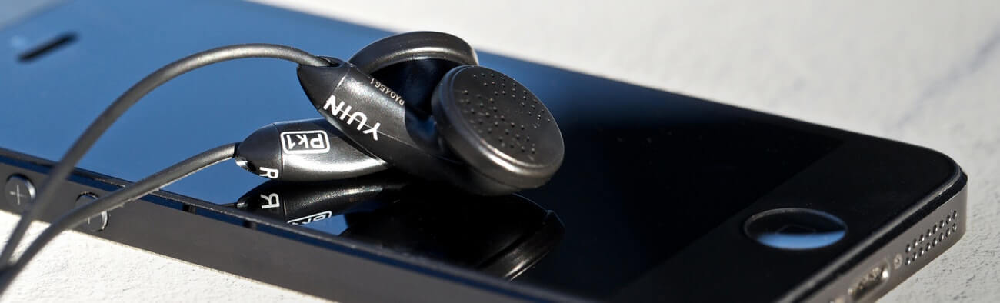

Top 5 earbuds from Low-end to High-end

Earbud (or Intra-Concha Earphone) is the type of common earphone with compact size, easy to carry. But the design of the sound is always open and no direction of sound so the sound is not focused. The bass is much diminished before reaching the ear, the distortion in the ear canal is also high due to the loss of sound, leading many to feel unsatisfied and tend to increase volume is quite high. However, there are lots of products proved that this theory is wrong. Here are the 5 best earbuds from the price range of really cheap to really expensive.
Venture Electronics Monk Plus (5$)
The VE Monks have now gained an almost cult status, and all for good reason. You get just the right, natural sound with that open sound-stage. At a 64 ohms rating, you still get effortless performance running off mobile devices with no need for an amp. The make is just the right quality for the money. But the sound quality you ask? It’s many times over the price… MANY… times… over. Every time you think about how much you paid for them, you'll be lost in relating that price to their worthy audio performance. Every time.
The sound is natural, tending a bit towards a V signature. They’re near to neutral though. They’re fine, across the whole range. There’s nothing fatiguing. Nothing overdone. No sibilant sounds. No lack of bass, really… other than just some sub-bass. The sound-stage is open and binaural. Instrument separation is quite nice. The mids and whatever is supposed to be forward, is forward. Vocals are great. Treble is just nice. Rolled up a bit. Now due to their nature, the bass will be lower than expected. But it’s just right. After some adjustment to EQ (via Poweramp on my phone, and crystalizing through my Creative E5 DAC) though, the bass improved a lot! Except for sub-bass, and stuff below 30Hz, we will have a hit or miss. But I can’t really complain anymore after EQ. Everything’s in place. I usually bring down the 140Hz to 500Hz block. In general, the sass on these is like a 10% compromise compared to other closed-back IEMs for so much better overall sound. Only bassheads may have some complaints. But then again, an open-back Sennheiser HD5XX or a Philips Fidelio isn’t basshead gear.
These, for me, are for any genre. I’m mainly an electronic music guy. But I love any genre of music out of em. Anything, goes. Classical, OST, Trance, Progressive, House, Dubstep, Chill-Step, Trap, Chill-Trap, Tribal Trap… anything.
Venture Electronics Monk Lite (10$)
Venture Electronics gained international fame with its Monk line of earbuds: their $5 price combined with good sound quality earned them a place in many audiophiles’ ears. VE has been using an off-the-shelf housing for all of their earbuds, and a relatively large one too. The Venture Electronics Monk Lite changes this. Don’t be fooled by the name: Lite stands for “small”, not for “downgraded/cheaper version” as it happens in the tech world (think of “Lite” smartphones). The biggest news is the use of new housings that are smaller than the previous ones, therefore having different acoustic properties.
The focus of the Monk Lite 40 ohm is on the midrange: bass is present, but in the background, on the same level as the treble. This leaves the midrange in the spotlight, creating a weird sound signature that is quite different from the market’s usual ones (e.g. V-shaped, bass boost) but still enjoyable and balanced.
Bass starts at about 55 Hz and slowly raises until it reaches 110 Hz, where it then keeps a more-or-less steady level. Lows are definitely not strong here, with sub-bass being practically absent and thus unable to give sound that punch and body that make music sound really full and fun. Massive Attack’s Angel clearly shows this, as the intro lacks that punch and depth it should have. Despite this shortcomings in quantity, the Monk Lite 40 ohm deliver in terms of quality: bass is decently fast and, although it won’t portray all the most minute details, it is quite enjoyable in its overall picture.
Midrange is the star of the show, being in front of everything else. It is pleasantly refined, with a good amount of detail and enough speed for it to make you feel the impact. Its balance is tilted towards the upper part, making the mids slightly bright. On the opposite side, there is also a slight emphasis on the lower mids. It’s an odd signature for sure! Voices are quite realistic and most instruments are pleasant, though acoustic instruments (e.g. piano, acoustic guitar, harp, etc) that benefit from a bit of added warmth are not as pleasant as on warmer headphones – though, on the other hand, wind instruments sound great.
Treble lies behind the mids, but lest not this trick you into thinking it is not clearly audible or muddy; on the contrary, it is decently clear and detailed. The general character is not analytical and overly rich with detail, but there’s enough of it to get a good picture of what’s going on. Extension is good, as far as I can tell (I can hear up to ~16 kHz…), with a peak around 11 kHz and a relatively slow roll off after that with a few peaks and dips.
The Monk Lite 40 ohm’s peculiar signature makes them good for genres that favour a strong midrange reproduction – that is, classical, folk, rock and all other (acoustically) similar genres. Other genres sound fine, but may suffer from the lack of bass extension.
Yuin PK2 (50$)
First, why would anyone drop serious money on ear buds? Isn't that the domain for gilded IEMs where isolation allows connoisseurs to appreciate the subtle nuances of hi-fidelity? At least with IEMs, a section of the public appears ready to plop down full-size cash on little listening devices. So why not with buds? If you follow the threads here carefully, particularly the portable audio forums, your ears are probably still ringing from a resounding chorus of people clamoring for a descent ear bud. About every other day someone asks: “Hey, is there a descent sounding bud out there?” Typical responses include: a) try an IEM; b) the senn is a good cheap bud; c) AT makes a pretty bud, supposed to be good too; d) why do you want a bud anyway?
Let me tackle that last one. I use buds a lot. In an office I have to be able to hear a colleague. At night it's helpful (sometimes) to hear a spouse when she's trying to talk to you. During the day it's helpful to here approaching cars as you're about to step off a corner onto the street. Basically it's nice to be able to rapidly insert and remove a bud. I also find them much more comfortable than any IEM I've ever tried.
Tone and timbre is where this little bud excels. Let me give an example. Sitting at a desk listening to the conclusion of a Bach piece, the audience claps. I sat up and looked around assuming someone had done a presentation in the office somewhere and I was hearing the clapping echo. Same sort of thing occasionally happens with my Beyer 880 – but this is a little bud!
It does, however, have some weaknesses – nothing is perfect. Treble is smooth but not as detailed as it could. Bass doesn't have a terrible amount of impact either. Lower treble and upper bass is thick and luscious but also slightly overemphasized, making some singers sound “real” and “present” but slightly “fat” and “buttery.”
It's fun and musical and sounds realistic. No, it won't do crazy bass, and no it won't hit the highest treble or give the most detail in complex passages, particularly orchestral. But it sounds “right” and makes music sound like music and you can listen to it all day long. And you won't get odd looks or get run over by a car when wearing them.
Yuin PK1 (150$)
When talking earbuds, the number one name that comes to mind is Yuin. Indeed, this Chinese company has single handedly created and sustained the demand for audiophile earbuds. I can confidently say that if not for Yuin, no audio conscious people would even be interested of listening to a pair of earbuds anymore. The Yuin brand and their PK line is so legendary, that I’ve yet to hear a single bad remark about their PK line, let alone their flagship PK-1 earbud. Now that’s a pretty amazing feat in a landscape where even $1,000 flagships are not free from faults. I don’t know if the PK-1 is really that good, or if people are too afraid to challenge the status quo on the PK-1, but I really have yet to hear one bad thing about the Yuin PK-1.
The Yuin has a permanent warmth and sweetness embedded in the sound, and it’ll give that coloration regardless of the recording. The Yuin is more reserved for slower and mellower vocal, jazz, and audiophile stuff. And yet, looking from the other guy’s perspective, the warm and analog sound of the Yuin does have a very strong appeal on its own. The voicing is slightly mellower and more romantic, and it really hits the right pleasure spots in the brain with the right music. I guess we’re back with something like a solid state versus vacuum tube, or analog versus digital debate. But on the other side, on if I’m playing rock recordings, the lack of low bass in the Yuin is a big downside that constantly left me wanting for a more weighty sound.
Simphonio Dragon 2+ (300$)
Simphonio Dragon 2+ is an expensive earbud, no silicone tips, but more of a classical earbud shape. This is the most expensive earbud we've heard, and most probably the most interesting one as well, but we won't be easy on it, just because of its 300 USD asking price, which means we have quite some expectations from it.
The sound quality of a high-end Earbud. Now, when you think of earbuds, if you're about the same age as us, or older, you probably remember that first 1$-3$ earbud that came with your 256MB MP3 Player, or the earbud that came with your CD Player. You might remember some things about its sound, like a sweet midrange, or not knowing what sub-bass was, or not having any treble.
We most certainly remember a lot of sweet memories of those old MP3 Players and how those ascended by doubling in storage capacity at 2-3 years intervals until we had an MP3 Player of 512 MB of storage, full of Linkin Park, Eminem and other music that we probably don't listen to quite as much these days, but still find well-recorded and interesting.
Now, you need to let go of those definitions for an earbud before you read about Dragon2+. We need to do that as well, this is a 300 USD Product that needs rigorous criticizing and reviewing.
Starting with the sub-bass, depending on your fit, you'll have a good to a moderate sub-bass, but it still is there and it is quite good. The rest of the bass is quite quick, and has a fairly good extension, especially for an earbud, but in quantity, it will always be below the midrange and the upper midrange / lower treble.
The midrange is extremely clear, well detailed, and most of all, really really wide sounding. Both male and female vocals sound natural, have really good timbre and texture to them, and pretty much all instruments sound really vivid and energetic. The overall midrange sounds engaging and keeps one in the music. The highest amount of impact comes from the midrange / upper midrange, where most of the energy is in Dragon2+. Music like Jazz all the way to pop sounds live and interesting, music comes off as lively on an overall level.
The treble is less in amount than the midrange, but not by much, Dragon2+ being bright enough to be interesting and to keep music exciting. The treble has a smoother texture, without grain, so it is ever so slightly soft in presentation, but has a good amount to stay interesting even for rock and metal music.
The resolving abilities of Dragon2+ are fairly within what we'd expect from a 300 USD earphone, along with the detail, while the sub-bass is a little fit dependent, and even with the best fit the sub-bass is a little shy for something like metal, where the pedals feel a little soft, but it should be noted that the midbass is warm enough to work well for rock, even for Pink Floyd and for older rock. Metal tends to sound a little happy on Dragon2+, but this isn't bad, it just means that something that's supposed to be harsh might be handed to the listener in a slightly happier mood.
This kind of signature works really well with anything really, the main reason for that being the soundstage. If there's anything that would be a weaker point of Dragon2+'s signature, that would most probably be Rap and Hip-Hop, where more bass would be welcome, but otherwise, we'd probably say that Dragon2+ is as impressive as a Grado headphone, especially in the sweet midrange, but with a slightly softer treble that is more inviting for long hours of listening.
At the end of the day, if you're looking for a really good earbud, for an open experience, and for a Balanced Earbud, Dragon2+ might be just the thing for you. Furthermore, if your ears prefer earbuds over In-Ears and Headphones, then you're in for a treat, Dragon2+ surely feels like a magical choice. We don't always recommend Earbuds, but when we do, they are pretty great earbuds, and Dragon2+ should bring lots of fun to you, if you're into 'buds.